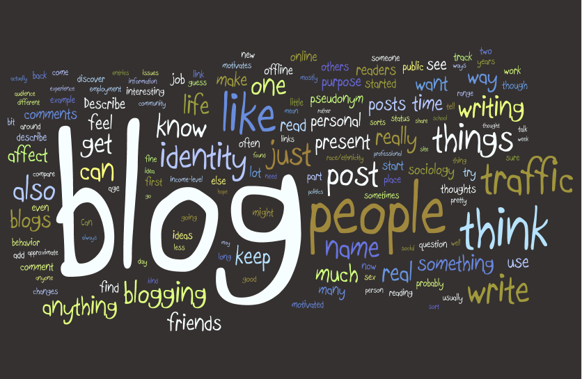

This is a timeline to each site.
This an example of timeline to view the years of creation of each site that had been created after Weblog.net.

3.4 Assignment
History of Blogging starter websites for bigger talks.

Responsive Readable form for Visual seekers.
I have been always interested in design in all types of materials and structures. " To be a successful presenter, you must think like a designer".- Resonate I had focused a lot of my interests to be a better designer as Web Progressive Views are to be concerned. There needs to be a natural approach and that there is unwritten to written materials to be discussed in formatting the best perspective viewable formations. I had been searching more about designers for Dior, Versace, and Iris van Herpen. I had experience with Sims since the decade of the first game to the mobile version of Sims 4. I want to see the best of the methods of the page by page if the window is not as big as a desktop screen. Iris takes 3d materials and was challenged to use this in her design work. I truly enjoy the Creative Views or placement of each design work for readability, scalability, and adaptable cohesiveness to a project to projection/presentation.
Andrew Bolton had explained the history of each design was created and why it was highlighted to this day. I hope to see that in website design can have archives as a history pinnacle of each frame to what had been made. Design changes according to social, psychological, psychical, illusions or theories to abstract the body of a person. This, I want to have an example of molding the web framework we have today.
First Draft towards the bigger frameworks to be and not to be.

Reasons, why this connects to the good ways of content creation, is to see the best and the worst practices that had been tried and to be attempted. Many ways can be best be useful when the site is to be readable to the ARIA tags to be readable to the cross-browser origins. In, Techniques for WCAG 2.0. "WAI-ARIA Technology Notes To improve accessibility, WAI-ARIA provides Web developers with the option to add the following semantic information to Web pages and rich Internet widgets which are then exposed to the browser" - "Techniques for WCAG 2.0", WCAG, 2012. Starting from the basics can really best serve the whole to deliver the best multi-functional site to be easy as a person clicking to each tab to each page. This is always a good way to think how to form the foundation of what is to come for building such as task. History is always best to read but not repeated if so current stages of issues arise. Things that can be migrated or patterned to the next stages to update is ideal to train the suited platform requirements.
 A blog is a regularly updated website or web page, typically one run by an individual or small group, that is written in an informal or conversational style.
A blog is a regularly updated website or web page, typically one run by an individual or small group, that is written in an informal or conversational style.
 Blogs have a relatively short history, even when compared with the history of the Internet itself.
And it’s only in the past five to ten years that they’ve really taken off and become an important part of the online landscape.
Blogs have a relatively short history, even when compared with the history of the Internet itself.
And it’s only in the past five to ten years that they’ve really taken off and become an important part of the online landscape.
 "The Early Years. It's generally recognized that the first blog was Links.net, created by Justin Hall, while he was a Swarthmore College student in 1994. Of course, at that time they weren't called blogs, and he just referred to it as his personal homepage. It wasn't until 1997 that the term “weblog” was coined."-WD Staff, "A BRIEF HISTORY OF BLOGGING" March 14, 2011.
"The Early Years. It's generally recognized that the first blog was Links.net, created by Justin Hall, while he was a Swarthmore College student in 1994. Of course, at that time they weren't called blogs, and he just referred to it as his personal homepage. It wasn't until 1997 that the term “weblog” was coined."-WD Staff, "A BRIEF HISTORY OF BLOGGING" March 14, 2011.
 Blogging is critical to online marketing. So, if you’re hoping to generate more sales, you need to be producing more content. Blogging is crucial for bringing in cheaper inbound leads at a higher rate.
Blogging is critical to online marketing. So, if you’re hoping to generate more sales, you need to be producing more content. Blogging is crucial for bringing in cheaper inbound leads at a higher rate.
 "Microblogging is a combination of blogging and instant messaging that allows users to create short messages to be posted and shared with an audience online. Social platforms like Twitter have become extremely popular forms of this new type of blogging, especially on the mobile web -- making it much more convenient to communicate with people compared to the days when desktop web browsing and interaction was the norm." "Less Time Spent Consuming Individual Pieces Of Content Because microblogging is such a popular form of social media and information consumption on mobile devices, it's worth being able to quickly get the gist of the post in a short, straight to the point format without needing to read or watch something that takes too much time." -Daniel Nations, "What Is Microblogging?" June 22, 2018
 Besides being able to communicate better with more frequent and shorter posts, you can also use microblogging platforms to easily encourage and facilitate more interaction by commenting, tweeting, reblogging, liking and more. This makes an easier, more direct way to communicate with people.
Microblogging wouldn't be as big of a deal as it is right now without the growing trend toward mobile web browsing. It's too hard to write, interact and consume lengthy blog posts on a smartphone or tablet, which is why microblogging goes hand in hand with this newer form of web browsing.
Besides being able to communicate better with more frequent and shorter posts, you can also use microblogging platforms to easily encourage and facilitate more interaction by commenting, tweeting, reblogging, liking and more. This makes an easier, more direct way to communicate with people.
Microblogging wouldn't be as big of a deal as it is right now without the growing trend toward mobile web browsing. It's too hard to write, interact and consume lengthy blog posts on a smartphone or tablet, which is why microblogging goes hand in hand with this newer form of web browsing.
This an example of timeline to view the years of creation of each site that had been created after Weblog.net.
“Work Smarter… Not Harder" originated in the 1930's. Allen F. Morgenstern, an industrial engineer, the creator of the work simplification program, coined the term."- Catherine Giordano,"How to Work Harder, Smarter, Better: Quotes from Famous People on Work", July 28, 2017.
A unique web design isn’t just about layout. It’s about how the design integrates with the content. With a little effort and ingenuity, all of us can create unique designs that speak to our audiences. The tools at our disposal today make our work easier. "By building off of the GAN model, we hoped to build a deep-net that was capable of not only learning a distribution of the style and content components of many different pieces of art, but was also able to novelly combine these components to create new pieces of art. The task of novel content generation is much more difficult than applying the style from one particular piece of art to the content of another." -Kenny Jones, "GANGogh: Creating Art with GANs", June 18, 2017.
Some of the biggest changes were caused by the rapid improvement of computer processor speed, hard drive storage space, and internet access speed. (Which increased over 10000% over the course of the last 50 years) As computers became stronger and faster, technologies were given more room to take advantage of these speed improvements. For example, a basic React Hello World demo would destroy a computer from the 90s, but works fine now. Another thing of historical influence was the ubiquity of internet access, meaning how common and easy it was for people to access the internet. As access increased, people of different needs began accessing the internet. (Blind, deaf, etc) This led to many of the changes introduced in HTML5. - Darius Strasel, Software Engineer